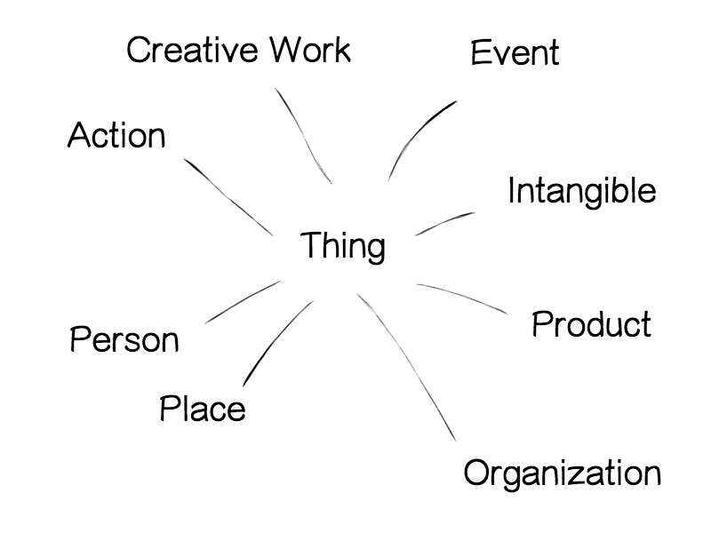

A importância da semântica no HTML - parte II
Publicado em:
@rapahaeru
Neste segundo post da série sobre a importância da semântica para os usuários e desenvolvedores, trataremos sobre como podemos melhorar nosso conteúdo de forma que os buscadores entendam o que realmente estamos oferecendo, com a menor possibilidade de ruídos de informação possível. Saberemos de maneira prática como podemos melhorar a disponibilidade de nosso conteúdo.
Caso não tenha lido o nosso primeiro post, basta acessar aqui.
Dando significado ao HTML
Lembram do uso da palavra “lembrança” que utilizamos no post anterior? Para ajudar a entender o significado dos elementos em um HTML ela ainda será útil. Ao procurar um conteúdo com as palavras “lembranças de casamento”, o que faria o motor de busca entender exatamente o que você está pesquisando? É apenas um exemplo para reflexão. Você acharia errado se na lista de respostas viessem fotos de pessoas felizes comemorando uma festa? Acharia errado também se viessem bem-casados e enfeites? Tudo isso é relativo. Para evitar esses tipos de ruídos e fazer com que o computador se aproxime mais a entender o uso contextual do significado, utilizamos os microdados (em inglês, microdata).
Trabalhando com microdados
O objetivo dos microdados é dar um maior significado aos documentos web. Foi criado pela organização do HTML5 (WHATWG) e hoje tornou-se o padrão de marcação do mesmo. Com os microdados, é possível ampliar o valor semântico dos elementos, saindo do tradicional e aprofundando no significado direto, inserindo marcações específicas no código fonte. Ele se utiliza de vários vocabulários para descrever os itens com pares de chave-valor para atribuir um significado aos elementos. Utilizaremos aqui os vocabulários do Schema.org, pois é o que mais cresce e onde a maioria dos motores de busca se baseiam para refinar seus resultados, além de ser patrocinado pelo Google, Yahoo, Microsoft e Yandex .
Schema.org, o que é exatamente?
É uma comunidade colaborativa com a missão de criar, manter e promover esquemas para dados estruturados na Internet. Porém, como estamos falando bastante sobre semântica ser o estudo do significado, então o que significa a palavra Schema?
Schema é uma palavra de origem grega Skhema e do latim Schema que quer dizer figura, plano ou modelo. Ele possui uma lista de vocabulários em tags xml para padronizarmos o que podemos oferecer na web de uma forma em que o conteúdo ali presente seja exatamente o que o comunicador deseja que seja encontrado.
Haviam outras marcações semânticas antes, como RDF e microformats, mas por serem diferentes umas das outras não existia um padrão para todos os significados. Como o Schema surgiu de uma força colaborativa dentre as empresas acima citadas, foi adotado como um modelo padrão, que facilitou a vida dos desenvolvedores.
Mas isso é realmente útil?
Além de conseguir separar exatamente (ou se aproximar disso) o significado de cada palavra, como por exemplo: "saia" (objeto) de "saia" (sair), ele pode fazer independente de línguas. Cada palavra explicitada em seu vocabulário correto, os buscadores não só entenderão o significado do que está sendo comunicado, como ainda compreenderão em todas as outras línguas, pois a padronização dos vocabulários é feita em inglês e igualmente implementado em qualquer lugar. Os exemplos seguintes deixam isso mais claro.
Mas o que são esse vocabulários?
O Schema.org os utiliza para rotular seu HTML com marcações que indiquem a que grupo semântico pertencem. E para que os grupos não ficassem espalhados, foi criada uma hierarquia para facilitar a vida de todos.
Observando a “cadeia” de palavras, percebemos que tudo começa com “Thing” que quer dizer, "coisa". Muito vago! Por isso existe a hierarquia.

A palavra “Thing” possui um conjunto de filhos: Action (Ação), Creative Work (Trabalho Criativo), Event (Evento), Intangible (Intangível), Organization (Organização), Person (Pessoa), Place (Lugar) e Product (Produto). Por sua vez, esses grupos são subdivididos em mais grupos e quanto mais descer o caminho, você notará que ficará cada vez mais específico, e essa é a ideia.
Hoje existem 571 vocabulários hierarquizados em grupos, Caso queira analisar mais profundamente, recomendo que vejam a lista completa.
Aplicação dos microdados no HTML
Agora que vimos quais vocabulários existem e sabemos qual a utilidade dos microdados, vamos descobrir como aplicar essas marcações em nosso HTML.
Observação importante: Essas propriedades somente podem ser aplicadas em doctype HTML5.
Caso queira mais detalhes, toda a explicação abaixo é baseada no “Getting started” do Schema.org.
Itemscope e Itemtype
Começando de forma direta, imagine que você tenha uma página do filme Avatar, de James Cameron, e que essa página possua: um link para o trailer e informações sobre o diretor. O código HTML ficaria mais ou menos assim:
<div>
<h1>Avatar</h1>
<span>Director: James Cameron (born August 16, 1954)</span>
<span>Science fiction</span>
<a href="../movies/avatar-theatrical-trailer.html">Trailer</a>
</div>
Para começar, vamos identificar a seção da página que fala sobre o filme e vamos aplicar o elemento itemscope na tag HTML no qual o conteúdo se relaciona ao longa.
<div itemscope>
<h1>Avatar</h1>
<span>Director: James Cameron (born August 16, 1954)</span>
<span>Science fiction</span>
<a href="../movies/avatar-theatrical-trailer.html">Trailer</a>
</div>
Adicionando itemscope, você está especificando que o conteúdo presente no HTML no elemento <div> … </div> é sobre um assunto específico.
Agora é necessário que se especifique qual o contexto da informação escopada, para isso adicionamos a propriedade itemtype imediatamente a seguir de itemscope.
<div itemscope itemtype="http://schema.org/Movie">
<h1>Avatar</h1>
<span>Director: James Cameron (born August 16, 1954)</span>
<span>Science fiction</span>
<a href="../movies/avatar-theatrical-trailer.html">Trailer</a>
</div>
itemprop
Acima dizemos que o escopo se trata de um filme, correto? Quais propriedades constituem um filme? Atores, diretores, trailer e muito mais. Para rotulá-las utilizamos o atributo itemprop que indica qual a relação dessa informação em relação ao escopo. Um exemplo seria atribuir o valor “director” a "James Cameron" para relacionar que o mesmo é o diretor do filme "Avatar".
Voltando ao nosso exemplo, vamos adicionar essas relações ao nosso HTML.
<div itemscope itemtype ="http://schema.org/Movie">
<h1 itemprop="name">Avatar</h1>
<span>Director: <span itemprop="director">James Cameron</span> (born August 16, 1954)</span>
<span itemprop="genre">Science fiction</span>
<a href="../movies/avatar-theatrical-trailer.html" itemprop="trailer">Trailer</a>
</div>
Obs. : Há uma lista para saber qual propriedade se adequa melhor ao seu contexto. No caso atual, são baseadas no escopo do filme, com o vocabulário Movie.
Agora os motores de busca não só sabem que a url do filme é de um trailer, como também é de um filme do gênero ficção cientifica, cujo o diretor é James Cameron.
Há casos a qual uma propriedade possui seu próprio conjunto de propriedades. Por exemplo: podemos relacionar que o Diretor é uma pessoa (Person) e que possui um nome (Name) e uma data de nascimento (birthDate). Dessa forma podemos especificar que o valor de uma propriedade (director) é um outro item que possa ser escopado (Person).
<div itemscope itemtype ="http://schema.org/Movie">
<h1 itemprop="name">Avatar</h1>
<div itemprop="director" itemscope itemtype="http://schema.org/Person">
Director: <span itemprop="name">James Cameron</span> (born <span itemprop="birthDate">August 16, 1954</span>)
</div>
<span itemprop="genre">Science fiction</span>
<a href="../movies/avatar-theatrical-trailer.html" itemprop="trailer">Trailer</a>
</div>
Pronto. Há muita lógica e pura semântica na tratativa dos escopos.
Agora, para enriquecer a compreensão do assunto, vamos ver um exemplo de como aplicamos aqui no Elo7.
Exemplo no Elo7
Acessando a página de um produto, temos informações como: imagem, nome do produto, nome da loja e produtos relacionados.
O contexto do escopo para nós, parece ser de um produto. Nos vocabulários do Schema temos um tipo Product, portanto criamos um escopo para produto.
<section itemscope itemtype="http://schema.org/Product">
Sabemos quais propriedades pertencem à um produto, como as acima citadas, portanto já temos as propriedades do atributo itemprop. Também sabemos que uma propriedade pode possuir um conjunto próprio de propriedades:
<figure itemprop="image" itemscope itemtype="http://schema.org/ImageObject">
<a href="url-da-imagem" title="nome do produto" itemprop="contentUrl">
<img src="path-da-imagem" itemprop="thumbnailUrl" alt="nome do produto" >
</a>
<figcaption itemprop="name">Nome do produto</figcaption>
</figure>
<div itemprop="offers" itemscope itemtype="http://schema.org/Offer">
<h1 itemprop="name">Porta Alianças Santo Antônio</h1>
<div class="price-quantity">
<meta itemprop="priceCurrency" content="BRL">
<span class="price" itemprop="price" content="65.00">por: R$ 65,00</span>
</div>
</div>
Um produto, no site do Elo7, vem do anúncio de seu vendedor e em cada página de um produto, há também informações de sua loja. Seria mais rico semanticamente, se também conseguíssemos aplicar significado às informações das lojas. Os motores de busca também o encontrariam de forma mais exata e por consequência aumentariam as chances de se efetuar uma venda. Logo, também aplicamos os microdados nas informações das lojas.
Só que agora o escopo é de um contexto diferente, estamos falando de uma loja, analisando os vocabulários, identificamos a informação de uma loja como uma organização (Organization).
<article itemprop="manufacturer" itemscope itemtype="http://schema.org/Organization">
Completando o código com o atributo itemprop, ficaria:
<article itemprop="manufacturer" itemscope itemtype="http://schema.org/Organization">
<div class="description">
<h2 class="name">
<a href="path-da-loja" itemprop="url">
<span itemprop="name">Nome da loja</span>
</a>
</h2>
<span itemprop="location" itemscope itemtype="http://schema.org/PostalAddress">
<span itemprop="addressLocality">São Paulo</span>,
<span itemprop="addressRegion">SP</span>
</span>
</div>
</article>
Repare que também utilizamos escopos do tipo de localização, PostalAddress e por consequência, as propriedades do atributo itemprop: addressLocality e addressRegion.
E não vamos nos esquecer dos produtos relacionados. Há também como aplicar microdados utilizando os vocabulários do Schema para eles.
<section class="related-items">
<h3>Veja também</h3>
<ul class="products">
<li class="product" itemprop="isRelatedTo" itemscope itemtype="http://schema.org/Product">
...
</li>
<li class="product" itemprop="isRelatedTo" itemscope itemtype="http://schema.org/Product">
...
</li>
</ul>
</section>
A propriedade isRelatedTo do atributo itemprop é utilizada justamente para relacionar um ou mais produtos. Mais informações aqui.
Como sei se apliquei as marcações da forma correta em meu site?
Hoje já existe uma ferramenta do Google chamada Ferramenta de testes de dados estruturados. Com ela você pode testar e conferir em tempo real todas as suas marcações aplicadas. É só inserir a url da página que deseja ter um feedback.
Com isso…
Depois de tudo isso, concordemos que este é um assunto que nós, desenvolvedores, precisamos nos focar e dar a real importância que ele merece. Vamos ser diretos? Do que se trata a web, a rede, a internet? Informação, certo? Se soubermos como armazená-la da forma que seja o mais fácil possível ser encontrada, sairemos muito na frente…
Mais informações:
- Mozilla Developer Network – HTML Element Reference – https://developer.mozilla.org/en-US/docs/Web/HTML/Element
- WHATWG – Semantics – https://html.spec.whatwg.org/multipage/semantics.html
- Filho, Almir – Microdata – http://loopinfinito.com.br/2012/05/02/microdata/
- Schema – Documentation – http://schema.org/docs/documents.html